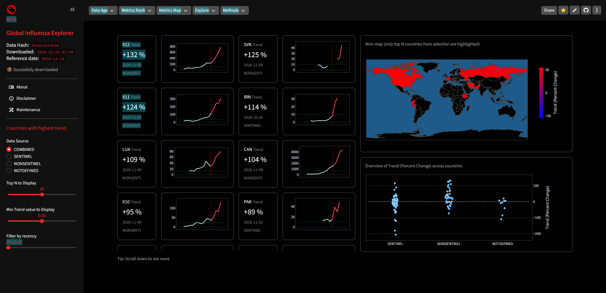
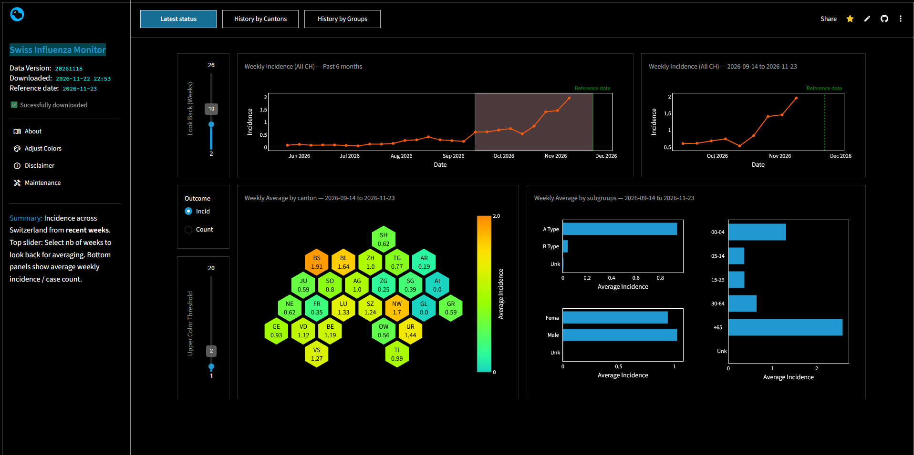
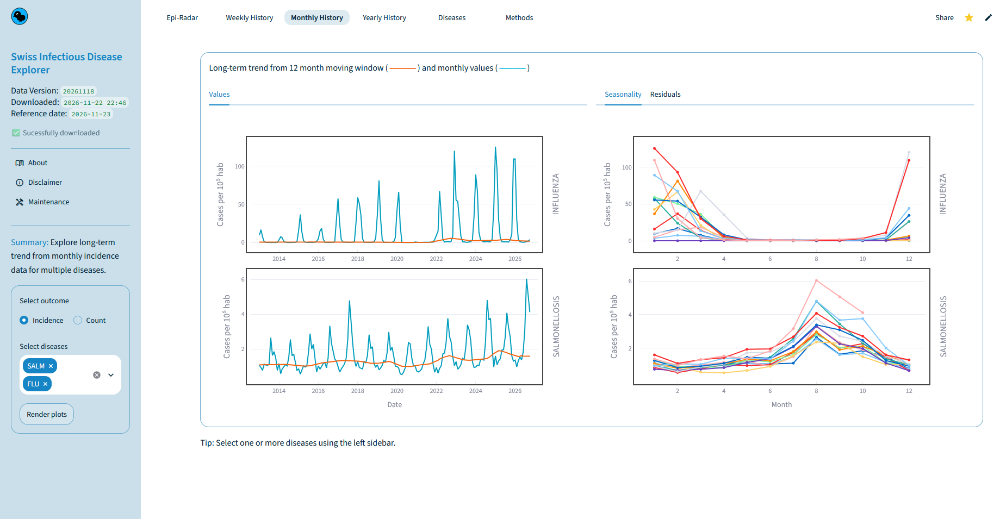

Insights into Public Epidemiological Data
Explore infectious disease surveillance through interactive dashboards that turn complex public health data into clear insights. Discover emerging trends, monitor disease activity, and investigate epidemiological patterns through engaging visualisations and simple data-driven analyses. From global influenza surveillance to Switzerland's mandatory-reporting infectious diseases, these apps make public health data easier to explore and interpret.


